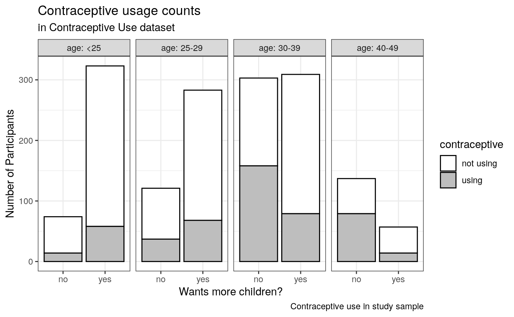

vignettes/session2_lab.Rmd
session2_lab.RmdWarning: This lab is long! But it covers methods that you can use throughout the course and on all kinds of regression. It will be the last lab of the first quarter of the course, because you can spend a couple weeks working through and understanding the contents of this lab.
Learning objectives
dplyr and ggplot2
Questions
mutate, group_by, and summarize
fit1, write on paper the model for expected probability of using birth control. Don’t forget the logit function.fit1, what is the expected probability of an individual 25-29 years old, with high education, who wants more children, using birth control? Calculate it manually, and using predict(fit1)
fit1: Relative to women under 25 who want to have children, what is the predicted increase in odds that a woman 40-49 years old who does not want to have children will be taking birth control?fit1 (no interactions)?Load the data from http://data.princeton.edu/wws509/datasets/#cuse. From this page: > These data show the distribution of 1607 currently married and fecund women interviewed in the Fiji Fertility Survey, according to age, education, desire for more children and current use of contraception.
# traditional method for loading data: # cuse <- read.table("cuse.dat", header=TRUE) # Using readr package with "File - Import Dataset" and manually setting factor levels. # Note, you don't have to write all this code by hand! It was produced by the File - Import Dataset helper. library(readr) cuse <- read_table2("cuse.dat", col_types = cols( age = col_factor(levels = c("<25", "25-29", "30-39", "40-49")), education = col_factor(levels = c("low", "high")), wantsMore = col_factor(levels = c("no", "yes")), X6 = col_skip() ) )
## Warning: Missing column names filled in: 'X6' [6]## Warning: 16 parsing failures.
## row col expected actual file
## 1 -- 6 columns 5 columns 'cuse.dat'
## 2 -- 6 columns 5 columns 'cuse.dat'
## 3 -- 6 columns 5 columns 'cuse.dat'
## 4 -- 6 columns 5 columns 'cuse.dat'
## 5 -- 6 columns 5 columns 'cuse.dat'
## ... ... ......... ......... ..........
## See problems(...) for more details.summary(cuse)
## age education wantsMore notUsing using
## <25 :4 low :8 no :8 Min. : 8.00 Min. : 4.00
## 25-29:4 high:8 yes:8 1st Qu.: 31.00 1st Qu.: 9.50
## 30-39:4 Median : 56.50 Median :29.00
## 40-49:4 Mean : 68.75 Mean :31.69
## 3rd Qu.: 85.75 3rd Qu.:49.00
## Max. :212.00 Max. :80.00Here’s a simple way to create the summary table that is required for your assignments, and for any epidemiological analysis you do. The text format is fine, and convenient for moving into another pubication or presentation document. See the tableone vignette for more complex usage and for instructions on how to export directly to an Excel or Word table.
# Note the use of `tableone::` to specify that `CreateTableOne` comes from the # tableone library without actually loading the library. tableone::CreateTableOne(data = cuse)
##
## Overall
## n 16
## age (%)
## <25 4 (25.0)
## 25-29 4 (25.0)
## 30-39 4 (25.0)
## 40-49 4 (25.0)
## education = high (%) 8 (50.0)
## wantsMore = yes (%) 8 (50.0)
## notUsing (mean (SD)) 68.75 (56.28)
## using (mean (SD)) 31.69 (25.54)Table 1: characteristics of the contraceptive use dataset
See the Data Visualization Cheatsheet for help on enhancing this barplot.
First let’s do some work on the data to get it in shape for plotting. I do these one step at a time to show what’s happening, but you could also do chain these steps all together using the pipe operator (%>%).
First, group by age and whether the participant reports wanting more children, and sum the number wanting or not wanting more children in each of these groups. Also rename “notUsing” to “not using” to make a nicer legend later.
library(tidyverse)
## ── Attaching packages ─────────────────────────────────────── tidyverse 1.3.0 ──## ✔ ggplot2 3.3.0 ✔ dplyr 0.8.5
## ✔ tibble 3.0.1 ✔ stringr 1.4.0
## ✔ tidyr 1.0.2 ✔ forcats 0.5.0
## ✔ purrr 0.3.4## ── Conflicts ────────────────────────────────────────── tidyverse_conflicts() ──
## ✖ dplyr::filter() masks stats::filter()
## ✖ dplyr::lag() masks stats::lag()cusebyage <- group_by(cuse, age, wantsMore) %>% summarise(using = sum(using), "not using" = sum(notUsing)) print(cusebyage)
## # A tibble: 8 x 4
## # Groups: age [4]
## age wantsMore using `not using`
## <fct> <fct> <dbl> <dbl>
## 1 <25 no 14 60
## 2 <25 yes 58 265
## 3 25-29 no 37 84
## 4 25-29 yes 68 215
## 5 30-39 no 158 145
## 6 30-39 yes 79 230
## 7 40-49 no 79 58
## 8 40-49 yes 14 43Next, pivot this into a longer table by putting the “using” and “not using” columns into a single column called “contraceptive”.
cusebyage <- pivot_longer(cusebyage, cols = using:"not using", values_to = "n", names_to = "contraceptive") cusebyage
## # A tibble: 16 x 4
## # Groups: age [4]
## age wantsMore contraceptive n
## <fct> <fct> <chr> <dbl>
## 1 <25 no using 14
## 2 <25 no not using 60
## 3 <25 yes using 58
## 4 <25 yes not using 265
## 5 25-29 no using 37
## 6 25-29 no not using 84
## 7 25-29 yes using 68
## 8 25-29 yes not using 215
## 9 30-39 no using 158
## 10 30-39 no not using 145
## 11 30-39 yes using 79
## 12 30-39 yes not using 230
## 13 40-49 no using 79
## 14 40-49 no not using 58
## 15 40-49 yes using 14
## 16 40-49 yes not using 43Finally, calculate the percentages reporting contraceptive use in each group. This will provide an alternative way to plot the data.
cusebyage <- group_by(cusebyage, age, wantsMore) %>% mutate(percent = n / sum(n) * 100) cusebyage
## # A tibble: 16 x 5
## # Groups: age, wantsMore [8]
## age wantsMore contraceptive n percent
## <fct> <fct> <chr> <dbl> <dbl>
## 1 <25 no using 14 18.9
## 2 <25 no not using 60 81.1
## 3 <25 yes using 58 18.0
## 4 <25 yes not using 265 82.0
## 5 25-29 no using 37 30.6
## 6 25-29 no not using 84 69.4
## 7 25-29 yes using 68 24.0
## 8 25-29 yes not using 215 76.0
## 9 30-39 no using 158 52.1
## 10 30-39 no not using 145 47.9
## 11 30-39 yes using 79 25.6
## 12 30-39 yes not using 230 74.4
## 13 40-49 no using 79 57.7
## 14 40-49 no not using 58 42.3
## 15 40-49 yes using 14 24.6
## 16 40-49 yes not using 43 75.4Now, make a sort of fancy greyscale barplot using ggplot2. You can make a nice plot without using nearly so many options, but I want to demonstrate the flexibility of making a bar plot with ggplot2.
ggplot(cusebyage, aes(x = wantsMore, weight = n, fill = contraceptive)) + # create a stacked bar plot, where the values provided are counts/frequencies, # and use black outlines for the bars. geom_bar(position = "stack", stat = "count", color = "black") + # use facet_grid to separate the plots by age group facet_grid(.~age, labeller = label_both) + labs(title = "Contraceptive usage counts", subtitle = "in Contraceptive Use dataset", caption = "Contraceptive use in study sample") + xlab("Wants more children?") + ylab("Number of Participants") + # there are lots of scale_fill_* options for automatic color schemes, but I # just want to specify the colors manually here. scale_fill_manual(values=c("white", "grey")) + theme_bw()

Figure 1: contraceptive use in the study sample. Bar plot is organized by age group and stacked by self-report of whether participant wants more children. The fraction of women wanting more children decreases with age, becoming a minority in the 40-49 age group. One unexpected observation in this bar chart is that in the <25 age group, those reporting wanting more children appear more likely to report using contraceptives. Is this the case? One way to make this more visually clear would be to use percentages, instead of counts, on the vertical scale. Try this, by changing weight = n to weight = percent to use the “percent” column as heights instead of the “n” column. While you’re at it, change the y label to reflect this change.
Note: The caption option in ggplot2 is suitable for smaller, embedded captions. But for publication the caption usually needs to be in separated text.
What is the mean fraction of women using birth control for each age group? Each education level? For women who do or don’t want more children? - Hint: look at the “Data Transformation Cheatsheet” functions mutate, group_by, and summarize. This is one of several very handy cheatsheets produced by RStudio, see https://rstudio.com/resources/cheatsheets/ for a list.
Solution
First create a new column containing the fraction using contraception:
cuse2 <- mutate(cuse, fracusing = using / (using + notUsing)) cuse2
## # A tibble: 16 x 6
## age education wantsMore notUsing using fracusing
## <fct> <fct> <fct> <dbl> <dbl> <dbl>
## 1 <25 low yes 53 6 0.102
## 2 <25 low no 10 4 0.286
## 3 <25 high yes 212 52 0.197
## 4 <25 high no 50 10 0.167
## 5 25-29 low yes 60 14 0.189
## 6 25-29 low no 19 10 0.345
## 7 25-29 high yes 155 54 0.258
## 8 25-29 high no 65 27 0.293
## 9 30-39 low yes 112 33 0.228
## 10 30-39 low no 77 80 0.510
## 11 30-39 high yes 118 46 0.280
## 12 30-39 high no 68 78 0.534
## 13 40-49 low yes 35 6 0.146
## 14 40-49 low no 46 48 0.511
## 15 40-49 high yes 8 8 0.5
## 16 40-49 high no 12 31 0.721Now, group and summarize by age:
cuse2 %>% group_by(age) %>% summarize(mean(fracusing))
## # A tibble: 4 x 2
## age `mean(fracusing)`
## <fct> <dbl>
## 1 <25 0.188
## 2 25-29 0.271
## 3 30-39 0.388
## 4 40-49 0.469cuse2## # A tibble: 16 x 6
## age education wantsMore notUsing using fracusing
## <fct> <fct> <fct> <dbl> <dbl> <dbl>
## 1 <25 low yes 53 6 0.102
## 2 <25 low no 10 4 0.286
## 3 <25 high yes 212 52 0.197
## 4 <25 high no 50 10 0.167
## 5 25-29 low yes 60 14 0.189
## 6 25-29 low no 19 10 0.345
## 7 25-29 high yes 155 54 0.258
## 8 25-29 high no 65 27 0.293
## 9 30-39 low yes 112 33 0.228
## 10 30-39 low no 77 80 0.510
## 11 30-39 high yes 118 46 0.280
## 12 30-39 high no 68 78 0.534
## 13 40-49 low yes 35 6 0.146
## 14 40-49 low no 46 48 0.511
## 15 40-49 high yes 8 8 0.5
## 16 40-49 high no 12 31 0.721Here the %>% is called a “pipe”, and it sends the output of the previous function to the input of the next function. This could also have been done in one step:
mutate(cuse, fracusing = using / (using + notUsing)) %>% group_by(age) %>% summarize(mean(fracusing))
## # A tibble: 4 x 2
## age `mean(fracusing)`
## <fct> <dbl>
## 1 <25 0.188
## 2 25-29 0.271
## 3 30-39 0.388
## 4 40-49 0.469Here the result is not stored anywhere; if you wanted to store it in a variable called myanswer, you could have started the above command with myanswer <- or myanswer =.
Also note that the line breaks are optional: you could put this all on one line, but breaking it up makes it more readable.
Based on fit1, write on paper the model for expected probability of using birth control? Don’t forget the (inverse) logit function.
Solution
fit1 <- glm( cbind(using, notUsing) ~ age + education + wantsMore, data = cuse, family = binomial("logit") )
I’m going to store the coefficients of fit1 in a new variable b just to save typing when writing out the formula, and round to two decimal places:
Here I’m going to take advantage of R Markdown’s support for LaTeX formulae to write out the fitted regression model. I also use the ` r 2+2 ` syntax (the result is 4) for putting results of R code inline, instead of writing out numbers of the coefficients. I never wrote the number “four”, but you’ll have to look at the .Rmd to see how I did that! Doing this in reports allows you to update them as input data changes, without having to manually re-enter or copy numbers.
\(P = \textit{logit}^{-1} \left( -1.13 + 0.39 \times \textit{age25-29} + 0.91 \times \textit{age30-39} + 1.19 \times \textit{age40-49} + NA \times \textit{educationlow} + -0.83 \times \textit{wantsMoreyes} \right)\)
\(\textit{logit}^{-1}(x) = \frac{1}{1+e^{-x}}\)
Based on fit1, what is the expected probability of an individual 25-29 years old, with high education, who wants more children, using birth control? Calculate it manually, and using predict(fit1)
Solution
This can be done using the predict() function, using a new data.frame giving the values that you want to predict for:
invLogit <- function(x) 1/(1+exp(-x)) newdata=data.frame(age="25-29", education="high", wantsMore="yes") invLogit( predict(fit1, newdata=newdata) )
## 1
## 0.2223899By default, predict() predicts on the original data, and taking a look, I noticed that the 7th value is the one we want to predict on:
invLogit( predict(fit1)[7] )
## 7
## 0.2223899If we were really doing this manually, on paper, we would just calculate the linear predictor, then use the inverse logit function. Note that education=“high” is the reference group, so we don’t use it here:
invLogit( bcoef["(Intercept)"] + bcoef["age25-29"] + bcoef["wantsMoreyes"] )
## (Intercept)
## 0.1722164I don’t really care, but if the remnant “(Intercept)” name there were annoying me, I would assign this to a variable then get rid of that name:
res <- invLogit( bcoef["(Intercept)"] + bcoef["age25-29"] + bcoef["wantsMoreyes"] ) names(res) <- NULL res
## [1] 0.1722164Based on fit1: Relative to women under 25 who want to have children, what is the predicted odds ratio for a woman 40-49 years old who does not want to have children will be taking birth control?
Solution
## age40-49
## 7.55488Using a likelihood ratio test, is there evidence that a model with interactions improves on fit1 (no interactions)?
Solution
fit1.int <- glm(cbind(using, notUsing) ~ age * education * wantsMore, data=cuse, family=binomial("logit")) anova(fit1, fit1.int, test="LRT")
## Analysis of Deviance Table
##
## Model 1: cbind(using, notUsing) ~ age + education + wantsMore
## Model 2: cbind(using, notUsing) ~ age * education * wantsMore
## Resid. Df Resid. Dev Df Deviance Pr(>Chi)
## 1 10 29.917
## 2 0 0.000 10 29.917 0.0008838 ***
## ---
## Signif. codes: 0 '***' 0.001 '**' 0.01 '*' 0.05 '.' 0.1 ' ' 1Which, if any, variables have the strongest interactions? I use the “stargazer” package here which is extremely flexible for showing regression results from all kinds of models, capable of comparing multiple models or multiple dependent variables in the same table, and providing formatting customized to numerous journal styles.
Solution
We see here that the strongest interaction coeffient is for age30-39:wantsMoreyes. It is statistically significant and negative (0). It appears that being 30-39 years old and wanting more children has a multiplicative effect against using birth control, moreso than expected based on the age or wanting more children alone.
The stargazer package is a good way to create nicely-formatted tables of regression results.
| Outcome: Using Birth Control | ||
| No Interaction | With Interactions | |
| (1) | (2) | |
| age25-29 | 0.39** (0.04, 0.73) | 0.27 (-1.12, 1.66) |
| age30-39 | 0.91*** (0.59, 1.23) | 0.95 (-0.25, 2.16) |
| age40-49 | 1.19*** (0.77, 1.61) | 0.96 (-0.27, 2.19) |
| educationhigh | 0.32*** (0.08, 0.57) | -0.69 (-2.04, 0.65) |
| wantsMoreyes | -0.83*** (-1.06, -0.60) | -1.26* (-2.70, 0.17) |
| age25-29:educationhigh | 0.46 (-1.15, 2.07) | |
| age30-39:educationhigh | 0.79 (-0.63, 2.21) | |
| age40-49:educationhigh | 1.60** (0.05, 3.15) | |
| age25-29:wantsMoreyes | 0.45 (-1.28, 2.18) | |
| age30-39:wantsMoreyes | 0.002 (-1.52, 1.52) | |
| age40-49:wantsMoreyes | -0.54 (-2.27, 1.18) | |
| educationhigh:wantsMoreyes | 1.47* (-0.15, 3.08) | |
| age25-29:educationhigh:wantsMoreyes | -0.83 (-2.79, 1.13) | |
| age30-39:educationhigh:wantsMoreyes | -1.29 (-3.04, 0.47) | |
| age40-49:educationhigh:wantsMoreyes | -0.61 (-2.83, 1.61) | |
| Constant | -1.13*** (-1.50, -0.77) | -0.92 (-2.08, 0.24) |
| Observations | 16 | 16 |
| Log Likelihood | -50.71 | -35.75 |
| Akaike Inf. Crit. | 113.43 | 103.51 |
| Note: | p<0.1; p<0.05; p<0.01 | |
Create a model matrix for a fit on age only, with contrasts between every pair of age groups. Between which age groups is the contrast significant?
Solution
First, I’ll do it manually, using the multcomp package and following an example from ?glht. I’m not going to bother anymore creating pretty tables with stargazer though…
## (Intercept) age25-29 age30-39 age40-49
## -1.5071591 0.4606758 1.0482932 1.4246380K <- rbind("25-29 - <25" = c(-1, 1, 0, 0), "30-39 - <25" = c(-1, 0, 1, 0), "40-49 - <25" = c(-1, 0, 0, 1), "30-39 - 25-29" = c(0, -1, 1, 0), "40-49 - 25-29" = c(0, -1, 0, 1), "40-49 - 30-39" = c(0, 0, -1, 1)) K
## [,1] [,2] [,3] [,4]
## 25-29 - <25 -1 1 0 0
## 30-39 - <25 -1 0 1 0
## 40-49 - <25 -1 0 0 1
## 30-39 - 25-29 0 -1 1 0
## 40-49 - 25-29 0 -1 0 1
## 40-49 - 30-39 0 0 -1 1##
## Simultaneous Tests for General Linear Hypotheses
##
## Fit: glm(formula = cbind(using, notUsing) ~ age, family = binomial("logit"),
## data = cuse)
##
## Linear Hypotheses:
## Estimate Std. Error z value Pr(>|z|)
## 25-29 - <25 == 0 1.9678 0.2841 6.926 <0.001 ***
## 30-39 - <25 == 0 2.5555 0.2734 9.347 <0.001 ***
## 40-49 - <25 == 0 2.9318 0.2975 9.854 <0.001 ***
## 30-39 - 25-29 == 0 0.5876 0.1406 4.181 <0.001 ***
## 40-49 - 25-29 == 0 0.9640 0.1831 5.265 <0.001 ***
## 40-49 - 30-39 == 0 0.3763 0.1660 2.268 0.0981 .
## ---
## Signif. codes: 0 '***' 0.001 '**' 0.01 '*' 0.05 '.' 0.1 ' ' 1
## (Adjusted p values reported -- single-step method)There is an easier way if you realize that these are the “Tukey” contrasts and use the contrMat function from the multcomp package:
K2 = multcomp::contrMat(1:4, type="Tukey") K2
##
## Multiple Comparisons of Means: Tukey Contrasts
##
## 1 2 3 4
## 2 - 1 -1 1 0 0
## 3 - 1 -1 0 1 0
## 4 - 1 -1 0 0 1
## 3 - 2 0 -1 1 0
## 4 - 2 0 -1 0 1
## 4 - 3 0 0 -1 1##
## Simultaneous Tests for General Linear Hypotheses
##
## Multiple Comparisons of Means: Tukey Contrasts
##
##
## Fit: glm(formula = cbind(using, notUsing) ~ age, family = binomial("logit"),
## data = cuse)
##
## Linear Hypotheses:
## Estimate Std. Error z value Pr(>|z|)
## 2 - 1 == 0 1.9678 0.2841 6.926 <0.001 ***
## 3 - 1 == 0 2.5555 0.2734 9.347 <0.001 ***
## 4 - 1 == 0 2.9318 0.2975 9.854 <0.001 ***
## 3 - 2 == 0 0.5876 0.1406 4.181 <0.001 ***
## 4 - 2 == 0 0.9640 0.1831 5.265 <0.001 ***
## 4 - 3 == 0 0.3763 0.1660 2.268 0.0983 .
## ---
## Signif. codes: 0 '***' 0.001 '**' 0.01 '*' 0.05 '.' 0.1 ' ' 1
## (Adjusted p values reported -- single-step method)We didn’t get the same informative coefficient names this time, but we could have just by renaming the rows in K2, for example:
##
## Multiple Comparisons of Means: Tukey Contrasts
##
## 1 2 3 4
## 25-29 - <25 -1 1 0 0
## 30-39 - <25 -1 0 1 0
## 40-49 - <25 -1 0 0 1
## 30-39 - 25-29 0 -1 1 0
## 40-49 - 25-29 0 -1 0 1
## 40-49 - 30-39 0 0 -1 1##
## Simultaneous Tests for General Linear Hypotheses
##
## Multiple Comparisons of Means: Tukey Contrasts
##
##
## Fit: glm(formula = cbind(using, notUsing) ~ age, family = binomial("logit"),
## data = cuse)
##
## Linear Hypotheses:
## Estimate Std. Error z value Pr(>|z|)
## 25-29 - <25 == 0 1.9678 0.2841 6.926 <0.001 ***
## 30-39 - <25 == 0 2.5555 0.2734 9.347 <0.001 ***
## 40-49 - <25 == 0 2.9318 0.2975 9.854 <0.001 ***
## 30-39 - 25-29 == 0 0.5876 0.1406 4.181 <0.001 ***
## 40-49 - 25-29 == 0 0.9640 0.1831 5.265 <0.001 ***
## 40-49 - 30-39 == 0 0.3763 0.1660 2.268 0.0977 .
## ---
## Signif. codes: 0 '***' 0.001 '**' 0.01 '*' 0.05 '.' 0.1 ' ' 1
## (Adjusted p values reported -- single-step method)There are plenty of canned contrast schemes provided by multcomp::contrMat. Note use of the example() function to run all examples from the contrmat() function. This is a great example of how there are many ways to analyze one particular experimental design, but that you need to know design matrices to utilize many of them.
In these examples, the first line n <- c(10,20,30,40) just signifies four levels, n = 1:4 would do exactly the same thing.
##
## cntrMt> n <- c(10,20,30,40)
##
## cntrMt> names(n) <- paste("group", 1:4, sep="")
##
## cntrMt> contrMat(n) # Dunnett is default
##
## Multiple Comparisons of Means: Dunnett Contrasts
##
## group1 group2 group3 group4
## group2 - group1 -1 1 0 0
## group3 - group1 -1 0 1 0
## group4 - group1 -1 0 0 1
##
## cntrMt> contrMat(n, base = 2) # use second level as baseline
##
## Multiple Comparisons of Means: Dunnett Contrasts
##
## group1 group2 group3 group4
## group1 - group2 1 -1 0 0
## group3 - group2 0 -1 1 0
## group4 - group2 0 -1 0 1
##
## cntrMt> contrMat(n, type = "Tukey")
##
## Multiple Comparisons of Means: Tukey Contrasts
##
## group1 group2 group3 group4
## group2 - group1 -1 1 0 0
## group3 - group1 -1 0 1 0
## group4 - group1 -1 0 0 1
## group3 - group2 0 -1 1 0
## group4 - group2 0 -1 0 1
## group4 - group3 0 0 -1 1
##
## cntrMt> contrMat(n, type = "Sequen")
##
## Multiple Comparisons of Means: Sequen Contrasts
##
## group1 group2 group3 group4
## group2 - group1 -1 1 0 0
## group3 - group2 0 -1 1 0
## group4 - group3 0 0 -1 1
##
## cntrMt> contrMat(n, type = "AVE")
##
## Multiple Comparisons of Means: AVE Contrasts
##
## group1 group2 group3 group4
## C 1 1.0000 -0.2222 -0.3333 -0.4444
## C 2 -0.1250 1.0000 -0.3750 -0.5000
## C 3 -0.1429 -0.2857 1.0000 -0.5714
## C 4 -0.1667 -0.3333 -0.5000 1.0000
##
## cntrMt> contrMat(n, type = "Changepoint")
##
## Multiple Comparisons of Means: Changepoint Contrasts
##
## group1 group2 group3 group4
## C 1 -1.0000 0.2222 0.3333 0.4444
## C 2 -0.3333 -0.6667 0.4286 0.5714
## C 3 -0.1667 -0.3333 -0.5000 1.0000
##
## cntrMt> contrMat(n, type = "Williams")
##
## Multiple Comparisons of Means: Williams Contrasts
##
## group1 group2 group3 group4
## C 1 -1 0.0000 0.0000 1.0000
## C 2 -1 0.0000 0.4286 0.5714
## C 3 -1 0.2222 0.3333 0.4444
##
## cntrMt> contrMat(n, type = "Marcus")
##
## Multiple Comparisons of Means: Marcus Contrasts
##
## group1 group2 group3 group4
## C 1 -1.0000 0.2222 0.3333 0.4444
## C 2 -1.0000 0.0000 0.4286 0.5714
## C 3 -0.3333 -0.6667 0.4286 0.5714
## C 4 -1.0000 0.0000 0.0000 1.0000
## C 5 -0.3333 -0.6667 0.0000 1.0000
## C 6 -0.1667 -0.3333 -0.5000 1.0000
##
## cntrMt> contrMat(n, type = "McDermott")
##
## Multiple Comparisons of Means: McDermott Contrasts
##
## group1 group2 group3 group4
## C 1 -1.0000 1.0000 0.0 0
## C 2 -0.3333 -0.6667 1.0 0
## C 3 -0.1667 -0.3333 -0.5 1
##
## cntrMt> ### Umbrella-protected Williams contrasts, i.e. a sequence of
## cntrMt> ### Williams-type contrasts with groups of higher order
## cntrMt> ### stepwise omitted
## cntrMt> contrMat(n, type = "UmbrellaWilliams")
##
## Multiple Comparisons of Means: UmbrellaWilliams Contrasts
##
## group1 group2 group3 group4
## C 1 -1 0.0000 0.0000 1.0000
## C 2 -1 0.0000 0.4286 0.5714
## C 3 -1 0.2222 0.3333 0.4444
## C 4 -1 0.0000 1.0000 0.0000
## C 5 -1 0.4000 0.6000 0.0000
## C 6 -1 1.0000 0.0000 0.0000
##
## cntrMt> ### comparison of each group with grand mean of all groups
## cntrMt> contrMat(n, type = "GrandMean")
##
## Multiple Comparisons of Means: GrandMean Contrasts
##
## group1 group2 group3 group4
## group1 0.9 -0.2 -0.3 -0.4
## group2 -0.1 0.8 -0.3 -0.4
## group3 -0.1 -0.2 0.7 -0.4
## group4 -0.1 -0.2 -0.3 0.6